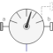
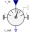
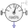
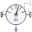

PartialRelativeBaseSensorBase class for relative sensor models defined by equations (frame_resolve must be connected exactly once) |

|
Information
This information is part of the Modelica Standard Library maintained by the Modelica Association.
Partial base class for relative sensor models defined by equations. The connector frame_resolve is always enabled and must be connected exactly once.
Connectors (3)
| frame_a |
Type: Frame_a Description: Coordinate system a (measurement is between frame_a and frame_b) |
|
|---|---|---|
| frame_b |
Type: Frame_b Description: Coordinate system b (measurement is between frame_a and frame_b) |
|
| frame_resolve |
Type: Frame_resolve Description: Coordinate system in which vector is optionally resolved |
Extended by (3)
|  |
Modelica.Mechanics.MultiBody.Sensors.Internal Transform relative vector into another frame |
|  |
Modelica.Mechanics.MultiBody.Sensors.Internal Basic sensor to measure relative angular velocity |
|  |
Modelica.Mechanics.MultiBody.Sensors.Internal Basic sensor to measure relative position vector |